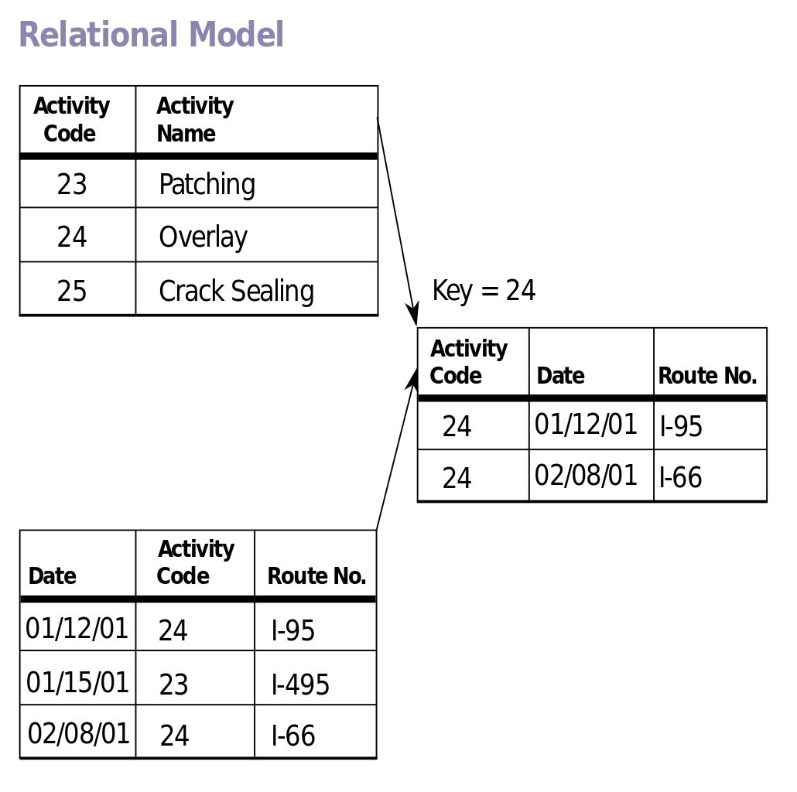

3 How Do We Store Data?
Stored Data
Businesses depend on data stored in databases. For example, consider Amazon.com. It has a vast amount of data. When you search for a product, your search text becomes part of a question that is asked of the data (a query for their database), and the results are sorted and filtered down to what you are looking for. The Church of Jesus Christ has huge stores of data that it uses for family history or for church organizations and membership records. Social media sites store vast amounts of information on its many users. The financial world relies on billions of transactions that are stored in databases. Banks, companies, clients, customers, vendors, orders from all sorts of retail transactions all rely on databases.
Companies can also make decisions regarding their next moves by querying their data, seeing trends, patterns, and then plan accordingly. We are surrounded by data, and it is growing every day. There is a need for people who can organize this data in a useful way so it can be used productively.
Database Models
A database model determines the logical structure of a database and determines in which manner data can be stored, organized, and manipulated. There are different types of database models for structuring a database.
Older models: network and hierarchical
A hierarchical database organizes data in a tree-like structure with parent and child nodes. Each child node will have only one parent node. Each parent node can have many child nodes. When data needs to be retrieved the whole tree is searched. This model was widely used during the mainframe era in the 1960s. It can still be used for storing file systems and geographic information. It allows for high performance needs, but its structure is very rigid.

The network model is an extension of the hierarchical database model. With the network model, each child node can have more than one parent. This allows more flexibility. The network model was widely used before the relational model was introduced. Unfortunately, it was difficult to implement and maintain.
Relational Model
The relational database model was introduced in the 1970s. A relational database model organizes data in rows and tables, which in turn can be accessed and linked to other rows and tables by sharing a common field. The relational model is by far the most common type of database model, and that is what we will be studying for the rest of this course, but there are other models to be aware of and understand.

Object-oriented models
The term object-oriented database model was first introduced in the mid 1980s. An object-oriented database (OODB) is a database that represents data as an object with properties and methods. The object-oriented database model is an alternative to the relational model and uses a combination of object-oriented and relational database principles to process data. This model combines database capabilities with object-oriented programming language capabilities.

Semi-structured or Unstructured data models
With the emergence of ‘Big Data’ in the late 2000s, the unstructured database had its beginning. Some databases have such a large scale that a relational database model begins to have limitations. A very large-scale relational database has to be distributed on multiple servers. Handling tables across different servers can be difficult. Also, the type of data you need to store might not fit into structured relational tables easily or might require a very complex structure to make it work. In these cases, a semi-structured or unstructured database model might be used. NoSQL is a type of unstructured database model. NoSQL is an abbreviation for ‘Not Only SQL’. A NoSQL database can store virtually any structure. New columns can be created easily. In fact, a NoSQL database doesn't even need a predefined schema (or data model).
Relational databases just weren’t designed to handle the quantity of data, number of users, and ever-changing data requirements for large systems like Amazon and Facebook. Even the church has used NoSQL for years to process billions of transactions. The amount of data volume in these types of systems just can’t be managed by a single relational database system. NoSQL databases can provide high performance at an extremely large scale. They can handle billions of queries in a small amount of time. NoSQL databases also have far more relaxed data model restrictions.
There are, however, limitations to NoSQL databases. The data doesn’t always stay consistent across the entire database as it moves around. This affects consistency on multiple servers. The times that transactions are saved differs from the more consistent saving times with relational systems. There are also many different NoSQL products, some with steep learning curves. Most organizations are not big enough to need an unstructured database like NoSQL. The vast majority of databases are still relational databases using SQL.
Popular NoSQL Database management software products include:
- MongoDB – open-source, uses a weakly typed JSON structure, written in C++
- Cassandra – developed at Facebook, uses distributed data storage, and is a columner database
- Dynamo – Amazon proprietary database, allows documents and graphs as data
- CouchDB – open source, high concurrency with strict consistency, uses JSON to store data and JavaScript as its query language
Data Types
The type of data that can be stored in relational databases is defined ahead of time. This is referred to as data types. Data types are the rules that define what data may be stored and how it is stored. We bring up the topic here because it’s important to figure out the correct data type during the design process. Having to make changes to a data type later after the database is developed can result in data loss. Data types also allow for more efficient storage and enable restrictions on data that can be entered into our database; therefore, keeping our data consistent and accurate. The following are some of the common relational data types we will be using in our course.
String Data Types
| CHAR | Fixed-length string from 1 to 255 characters long. The length is fixed at creation. |
| VARCHAR | Variable-length string from 1 to 65,535 characters long |
| ENUM | One string from a predefined list of strings |
| SET | Zero or more values from a predefined list |
Numeric Data Types
| INT | Integer (whole number) |
| TINYINT | Integers at a smaller range -128 to 127 used for Boolean 0 and 1 |
| DECIMAL | Numbers with digits after the decimal point |
A note about ENUM: Only use ENUM when you’re storing distinct, unchanging values sets where you will never need to store additional related info. It should only have more than 2 to 20 items. If there are only 2 choices use tinyint for 1 or 0. Also don’t use numeric values in ENUM they should use a numeric datatype. Using a reference table instead of ENUM is advisable when there may be any changes to the value options in the future.
Date and Time Data Types
| DATE | Dates from 1000-01-01 to 9999-12-31 as YYYY-MM-DD |
| DATETIME | Combines DATE AND TIME |
| TIME | Time as HH:MM:SS in 24 hour format |
| YEAR | Years ranging from 1901 to 2155 |